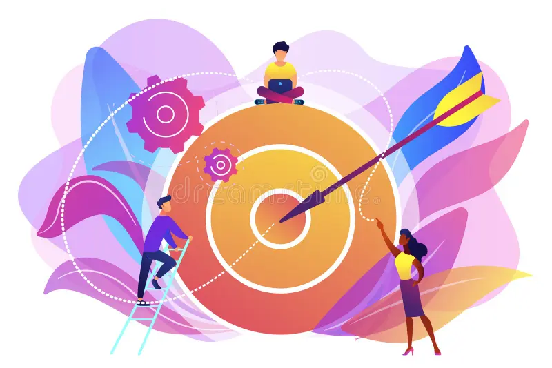

Lesson: Develop Skills You Are Passionate About
 People who focus on learning skills they love not only find greater satisfaction in their work but also open doors to more sustainable and fulfilling ways to make money. By pursuing passions, whether it's in technology, arts, sports, or any other area of interest, they are more likely to stay motivated and committed to mastering those skills. When you're passionate about something, the learning process becomes enjoyable, and you're willing to put in the time and effort needed to become an expert. This deep engagement can lead to higher-quality work, more innovation, and ultimately better opportunities to monetize those skills, whether through freelancing, starting a business, or gaining recognition in a particular field.
People who focus on learning skills they love not only find greater satisfaction in their work but also open doors to more sustainable and fulfilling ways to make money. By pursuing passions, whether it's in technology, arts, sports, or any other area of interest, they are more likely to stay motivated and committed to mastering those skills. When you're passionate about something, the learning process becomes enjoyable, and you're willing to put in the time and effort needed to become an expert. This deep engagement can lead to higher-quality work, more innovation, and ultimately better opportunities to monetize those skills, whether through freelancing, starting a business, or gaining recognition in a particular field.
Benefits of Doing What You Love

People who focus on learning skills they love not only find greater satisfaction in their work but also open doors to more sustainable and fulfilling ways to make money. By pursuing passions, whether it's in technology, arts, sports, or any other area of interest, they are more likely to stay motivated and committed to mastering those skills.
- Increased Motivation and Productivity: When people engage in work they’re passionate about, they naturally feel more motivated. They are excited to wake up and work every day, leading to higher levels of productivity. Passion fuels energy, making it easier to overcome challenges and persist through difficulties, which is essential for long-term success.
- Authenticity and Creativity: When people work in areas they love, they often bring more creativity and innovation. Their passion allows them to think outside the box, solve problems in unique ways, and approach challenges with enthusiasm. Being authentic and fully engaged in your work also leads to greater personal satisfaction and fulfillment.
- Natural Skill Development: People tend to naturally improve and develop expertise in activities they love. This deep engagement allows them to invest time and effort into learning, mastering skills, and becoming experts in their fields. As they develop expertise, they become more valuable, which can lead to better opportunities, higher pay, or even entrepreneurship.
- Financial Success is More Likely: People often believe that doing what they love won’t be financially rewarding, but the opposite can be true. Passionate people tend to work harder, become more innovative, and stay committed longer, which can lead to greater success and financial rewards over time. When you love what you do, you're more likely to take risks, persevere, and seize opportunities that lead to financial success.
- Resilience in Tough Times: Every career has its ups and downs, but when you genuinely love what you do, you're more likely to stay resilient during challenging times. Your passion for the work itself can sustain you, even when external rewards or financial gains are slow to come.
Guide on What Skills to Learn
Here's a guide on what skills to learn and how to work hard to excel:
- Core Skills Based on Your Field: First, identify the specific skills needed in your chosen field or passion. These are the technical abilities that make you an expert in your area.
- Technology: Learn coding, data analysis, or machine learning if you're interested in tech.
- Creative Fields: For careers in design, music, or writing, master tools like Photoshop, Adobe Premiere, or creative writing techniques.
- Business & Entrepreneurship: Learn marketing, sales, financial management, and strategic planning.
- Health & Fitness: Gain expertise in nutrition, physical training, or mental health counseling.
- Universal Skills: Regardless of your field, some skills are crucial to success:
- Time Management: Organize your schedule and manage your tasks efficiently to maximize productivity.
- Communication: Hone your ability to express ideas clearly and build relationships with others.
- Problem-Solving: Learn how to think critically and find creative solutions to challenges.
- Adaptability: Be flexible and open to learning new things or pivoting when necessary.
- Leadership: Develop the ability to inspire and guide others, even if you're working solo.
- Commitment to Continuous Learning: To be the best, you must adopt a mindset of lifelong learning. Industries are always evolving, and staying at the top requires continuous improvement. Take online courses, attend workshops, and stay updated with trends and new technologies. Mastery takes time, so be patient but persistent.
Steps to Acquire New Skills
 Acquiring new skills can be a rewarding and transformative journey. Here’s a step-by-step guide to help you get started:
Acquiring new skills can be a rewarding and transformative journey. Here’s a step-by-step guide to help you get started:
- Identify Your Interest: Reflect on what excites you or what you’re curious about. Whether it’s coding, writing, playing an instrument, or learning a language, find something you genuinely enjoy.
- Set Clear Goals: Break down your larger goal into smaller, achievable milestones. For example, if you want to learn coding, start with the basics like learning HTML, then progress to more advanced languages.
- Find Learning Resources: Online courses on platforms like Coursera, Udemy, or Khan Academy offer courses in virtually any subject. Visit your local library to read books or find tutorials online that fit your learning style. Seek guidance from people who are already skilled in the area you want to develop and seek mentorship from them.
- Practice, Practice, Practice: Skills are developed through practice. The more you apply what you’ve learned, the faster you’ll improve. For example, if you’re learning an instrument, play daily; if it’s a sport, practice drills consistently.
- Push Beyond Your Comfort Zone: As you grow more comfortable with the basics, challenge yourself with harder tasks or more complex projects. This is where real growth happens.
- Learn from Mistakes: Share your progress with others—friends, family, mentors—and ask for constructive feedback. Mistakes are part of learning; don’t be afraid to fail, as each mistake brings you closer to improvement.
- Apply What You’ve Learned: Start real-world projects, collaborate with others, or use your skills to solve problems. The more you apply your new skills in practical settings, the more refined they become.
- Stay Lifelong Learner: Skill development is a continuous process. Stay open to learning new things and upgrading your current skill set.
By following these steps, people can systematically acquire new skills and build confidence in their abilities. These skills can be used to earn money and seek financial independence.
Believe in Your Passion and Hustle for Your Dreams
To every young person out there, know this: the things you love, the things that make you feel alive, are worth every bit of your time and energy. Whether it's coding, art, music, sports, or something entirely your own, your passions are a gift. But passion alone won’t take you where you want to go — hard work will.
The road to mastering your craft won’t always be easy. There will be setbacks, failures, and moments where doubt creeps in. But it’s in those moments that your determination matters most. Every hour you put in, every challenge you overcome, shapes your future.
Dream big, but hustle harder. Don’t be afraid to invest in yourself. Keep learning, keep practicing, and stay curious. The more you pour into your passion, the more it will give back to you. And remember, nothing worth having comes overnight. Greatness takes time.
So, work hard, stay consistent, and don’t give up. You are capable of more than you know, and the world is waiting for you to show it.
Let's Practice What You Learned!
Go Back!